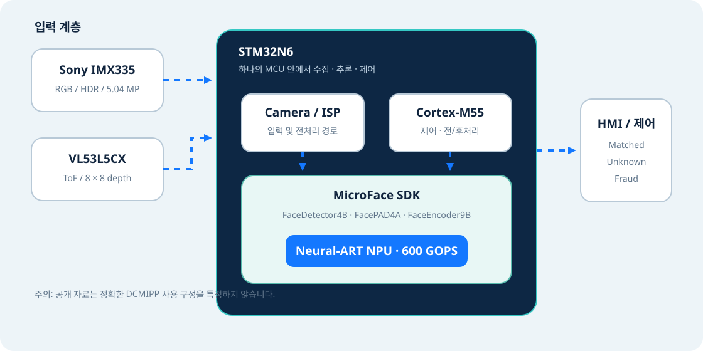

RGB가 주는 것
얼굴 외형, 윤곽, 명암, 표정과 같이 CNN이 특징을 추출하는 시각 정보를 제공합니다.
02 · Technical guide
센서 입력, STM32N6 내부 자원, MicroFace SDK, 결과 인터페이스가 어떻게 연결되는지 계층별로 봅니다.
Block view
센서는 관측하고, MicroFace는 얼굴 관련 판단을 수행하며, STM32N6는 데이터 이동·제어·가속 실행의 기반이 됩니다.

Components
| 영역 | 구성요소 | 역할 | 확인 상태 |
|---|---|---|---|
| RGB 입력 | Sony IMX335 | 5.04 MP HDR 얼굴 영상 취득 | 공개 확인 |
| 거리 입력 | VL53L5CX | 8×8 multi-zone ToF 거리 맵 제공 | 공개 확인 |
| 제어 | Arm Cortex-M55 | 응용 흐름과 일반 처리 담당 | 플랫폼 사양 |
| AI 가속 | Neural-ART | MicroFace의 신경망 연산 가속 | 공개 확인 |
| 소프트웨어 | MicroFace SDK | 검출·PAD·특징 추출·매칭 제공 | 공개 확인 |
| 카메라 전처리 | DCMIPP 등 | STM32N6에 관련 하드웨어가 있으나 이 데모의 정확한 사용 구성은 미공개 | 미공개 |
얼굴 외형, 윤곽, 명암, 표정과 같이 CNN이 특징을 추출하는 시각 정보를 제공합니다.
장면의 거리 구조를 8×8 영역으로 측정해 평면 사진과 실제 얼굴을 구분할 단서를 제공합니다.
RGB와 ToF가 어느 layer에서 결합되는지, 특징 수준인지 판정 수준인지 등의 내부 fusion 구조는 공식 자료만으로 확정할 수 없습니다.